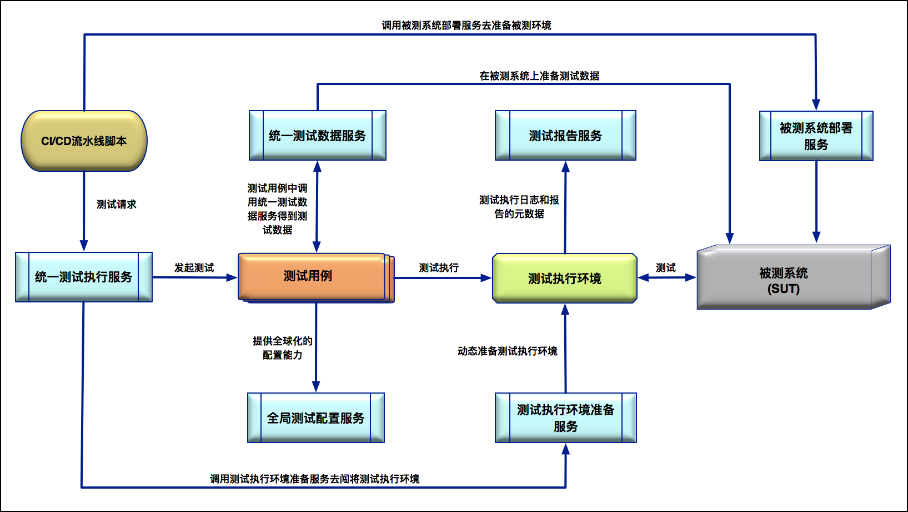
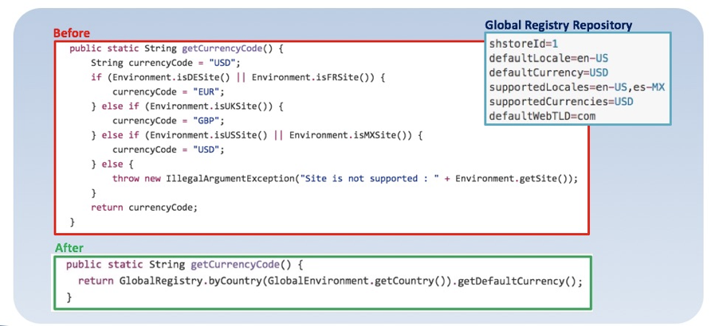

- 00 开篇词 从“小工”到“专家”，我的软件测试修炼之道.md.html
- 01 你真的懂测试吗？从“用户登录”测试谈起.md.html
- 02 如何设计一个“好的”测试用例？.md.html
- 03 什么是单元测试？如何做好单元测试？.md.html
- 04 为什么要做自动化测试？什么样的项目适合做自动化测试？.md.html
- 05 你知道软件开发各阶段都有哪些自动化测试技术吗？.md.html
- 06 你真的懂测试覆盖率吗？.md.html
- 07 如何高效填写软件缺陷报告？.md.html
- 08 以终为始，如何才能做好测试计划？.md.html
- 09 软件测试工程师的核心竞争力是什么？.md.html
- 10 软件测试工程师需要掌握的非测试知识有哪些？.md.html
- 11 互联网产品的测试策略应该如何设计？.md.html
- 12 从0到1：你的第一个GUI自动化测试.md.html
- 13 效率为王：脚本与数据的解耦 + Page Object模型.md.html
- 14 更接近业务的抽象：让自动化测试脚本更好地描述业务.md.html
- 15 过不了的坎：聊聊GUI自动化过程中的测试数据.md.html
- 16 脑洞大开：GUI测试还能这么玩（Page Code Gen + Data Gen + Headless）？.md.html
- 17 精益求精：聊聊提高GUI测试稳定性的关键技术.md.html
- 18 眼前一亮：带你玩转GUI自动化的测试报告.md.html
- 19 真实的战场：如何在大型项目中设计GUI自动化测试策略.md.html
- 20 与时俱进：浅谈移动应用测试方法与思路.md.html
- 21 移动测试神器：带你玩转Appium.md.html
- 22 从0到1：API测试怎么做？常用API测试工具简介.md.html
- 23 知其然知其所以然：聊聊API自动化测试框架的前世今生.md.html
- 24 紧跟时代步伐：微服务模式下API测试要怎么做？.md.html
- 25 不破不立：掌握代码级测试的基本理念与方法.md.html
- 26 深入浅出之静态测试方法.md.html
- 27 深入浅出之动态测试方法.md.html
- 28 带你一起解读不同视角的软件性能与性能指标.md.html
- 29 聊聊性能测试的基本方法与应用领域.md.html
- 30 工欲善其事必先利其器：后端性能测试工具原理与行业常用工具简介.md.html
- 31 工欲善其事必先利其器：前端性能测试工具原理与行业常用工具简介.md.html
- 32 无实例无真相：基于LoadRunner实现企业级服务器端性能测试的实践（上）.md.html
- 33 无实例无真相：基于LoadRunner实现企业级服务器端性能测试的实践（下）.md.html
- 34 站在巨人的肩膀：企业级实际性能测试案例与经验分享.md.html
- 35 如何准备测试数据？.md.html
- 36 浅谈测试数据的痛点.md.html
- 37 测试数据的“银弹”- 统一测试数据平台（上）.md.html
- 38 测试数据的“银弹”- 统一测试数据平台（下）.md.html
- 39 从小作坊到工厂：什么是Selenium Grid？如何搭建Selenium Grid？.md.html
- 40 从小工到专家：聊聊测试执行环境的架构设计（上）.md.html
- 41 从小工到专家：聊聊测试执行环境的架构设计（下）.md.html
- 42 实战：大型全球化电商的测试基础架构设计.md.html
- 43 发挥人的潜能：探索式测试.md.html
- 44 测试先行：测试驱动开发(TDD).md.html
- 45 打蛇打七寸：精准测试.md.html
- 46 安全第一：渗透测试.md.html
- 47 用机器设计测试用例：基于模型的测试.md.html
- 48 优秀的测试工程师为什么要懂大型网站的架构设计？.md.html
- 49 深入浅出网站高性能架构设计.md.html
- 50 深入浅出网站高可用架构设计.md.html
- 51 深入浅出网站伸缩性架构设计.md.html
- 52 深入浅出网站可扩展性架构设计.md.html
- 测试专栏特别放送 浅谈全链路压测.md.html
- 测试专栏特别放送 答疑解惑第一期.md.html
- 测试专栏特别放送 答疑解惑第七期.md.html
- 测试专栏特别放送 答疑解惑第三期.md.html
- 测试专栏特别放送 答疑解惑第二期.md.html
- 测试专栏特别放送 答疑解惑第五期.md.html
- 测试专栏特别放送 答疑解惑第六期.md.html
- 测试专栏特别放送 答疑解惑第四期.md.html
- 结束语 不是结束，而是开始.md.html
- 捐赠
42 实战：大型全球化电商的测试基础架构设计
你好，我是茹炳晟。今天我和你分享的主题是“实战：大型全球化电商的测试基础架构设计”。
在前面的两篇文章中，我和你分享了测试基础架构的设计以及演进之路，其中涉及到了统一测试执行平台、Selenium Grid和Jenkins等一系列的概念。
在掌握了这些基础内容之后，今天我就和你一起看看大型全球化电商的测试基础架构又是如何设计的。这其中除了我之前介绍过的概念以外，还会引入一些新的服务和理念，我都会和你一一道来。
因为我们已经掌握了测试基础架构设计的基础知识，所以今天我会采用一种不同于以往由浅入深的方式，直接给出大型全球化电商网站的全局测试基础架构的最佳实践，然后再依次解释各个模块的主要功能以及实现基本原理。
其实，大型全球化电商网站全局测试基础架构的设计思路，可以总结为“测试服务化”。也就是说，测试过程中需要用的任何功能都通过服务的形式提供，每类服务完成一类特定功能，这些服务可以采用最适合自己的技术栈，独立开发，独立部署。而至于到底需要哪些测试服务，则是在理解了测试基础架构的内涵后再高度抽象后得到的。从本质上来看，这种设计思想其实和微服务不谋而合。
根据在大型全球化电商网站工作的实际经验，我把一个理想中的测试基础架构概括为了一张图（如图1所示）。

图1 大型全球化电商网站的全局测试基础架构设计
这个理想的测试基础架构，包括了6种不同的测试服务，分别是：统一测试执行服务、统一测试数据服务、全局测试配置服务、测试报告服务、测试执行环境准备服务，以及被测系统部署服务。
接下来，我们一起看看这6大测试服务，具体是什么，以及如何实现。
统一测试执行服务
从本质上看，统一测试执行服务，其实和统一测试执行平台（你可以再回顾一下第41篇文章《从小工到专家：聊聊测试执行环境的架构设计（下）》）是一个概念。只不过，统一测试执行服务，强调的是服务，也就是强调测试执行的发起是通过Restful API调用完成的。
总结来说，以Restful API的形式对外提供测试执行服务的方式，兼具了测试版本管理、Jenkins测试Job管理，以及测试执行结果管理的能力。
统一测试执行服务的主要原理是，通过Spring Boot框架提供Restful API，内部实现是通过调度Jenkins Job具体发起测试。如果你对此还有疑惑，请参考第40篇文章《从小工到专家：聊聊测试执行环境的架构设计（上）》。
还记得我在前面一直提到的将测试发起与CI/CD流水线集成吗？这个统一测试执行服务采用的Restful API调用，主要用户就是CI/CD流水线脚本。我们可以在这些脚本中，通过统一的Restful API接口发起测试。
统一测试数据服务
统一测试数据服务，其实就是统一测试数据平台（你也可以再回顾一下第37篇《测试数据的“银弹”- 统一测试数据平台（上）》和第38篇《测试数据的“银弹”- 统一测试数据平台（下）》文章的内容）。
任何测试，但凡需要准备测试数据的，都可以通过Restful API调用统一测试数据服务，然后由它在被测系统中实际创建或者搜索符合要求的测试数据。而具体的测试数据创建或者搜索的细节，对于测试数据的使用者来说，是不需要知道的。也就是说，统一测试数据服务，会帮助我们隐藏测试数据准备的所有相关细节。
同时，在统一测试数据服务内部，通常会引入自己的内部数据库管理测试元数据，并提供诸如有效测试数据数量自动补全、测试数据质量监控等高级功能。
在实际工程项目中，测试数据的创建通常都是通过调用测试数据准备函数完成的。而这些函数内部，主要通过API和数据库操作相结合的方式，实际创建测试数据。
如果你对测试数据的准备还有疑问，或者想知道更多的细节内容，可以再回顾一下前面“测试数据准备”的系列的第35~38篇文章。
测试执行环境准备服务
测试执行环境准备服务，其实我也已经介绍过了。这里“测试执行环境”，是狭义的概念，特指具体执行测试的测试执行机器集群：对于GUI自动化测试来说，指的就是Selenium Grid；对于API测试来说，指的就是实际发起API调用的测试执行机器集群。
测试执行环境准备服务的使用方式，一般有两种：
- 一种是，由统一测试执行服务根据测试负载情况，主动调用测试执行环境准备服务来完成测试执行机的准备，比如启动并挂载更多的Node到Selenium Grid中；
- 另一种是，测试执行环境准备服务不直接和统一测试执行服务打交道，而是由它自己根据测试负载来动态计算测试集群的规模，并完成测试执行集群的扩容与收缩。
被测系统部署服务
被测系统部署服务，主要被用来安装部署被测系统和软件。虽然这部分内容我以前没有提到过，但它很好理解。其实现原理是，调用DevOps团队的软件安装和部署脚本。
- 对于那些可以直接用命名行安装和部署的软件来说很简单，一般只需要把人工安装步骤的命名行组织成脚本文件，并加入必要的日志输出和错误处理即可。
- 对于那些通过图形界面安装的软件，一般需要找出静默（Silent）模式的安装方式，然后通过命令行安装。
如果被测软件安装包本身不支持静默安装模式，我强烈建议给发布工程师提需求，要求他加入对静默安装模式的支持。其实，一般的打包工具都能很方能地支持Silent安装模式，并不会增加额外的工作量。
被测系统部署服务，一般由CI/CD流水线脚本来调用。在没有被测系统部署服务之前，CI/CD流水线脚本中一般会直接调用软件安装和部署脚本。而在引入了被测系统部署服务后，我们就可以在CI/CD流水线脚本中直接以Restful API的形式调用标准化的被测系统部署服务了。这样做的好处是，可以实现CI/CD流水线脚本和具体的安装部署脚本解耦。
测试报告服务
测试报告服务，也是测试基础架构的重要组成部分，其主要作用是为测试提供详细的报告。
测试报告服务的实现原理，和传统测试报告的区别较大。
传统的软件测试报告，通常直接由测试框架产生，比如TestNG执行完成后的测试报告，以及HttpRunner执行结束后的测试报告等等，也就是说测试报告和测试框架绑定在了一起。
对于大型电商网站而言，由于各个阶段都会有不同类型的测试，所以测试框架本身就具有多样性，因此对应的测试报告也是多种多样。而测试报告服务的设计初衷，就是希望可以统一管理这些格式各异、形式多样的测试报告，同时希望可以从这些测试报告中提炼出面向管理层的统计数据。
为此，测试报告服务的实现中引入了一个NoSQL数据库，用于存储结构各异的测试报告元数据。在实际项目中，我们会改造每个需要使用测试报告服务的测试框架，使其在完成测执行后将测试报告的元数据存入到测试报告服务的NoSQL数据库。这样，我们再需要访问测试报告的时候，就可以直接从测试报告服务中提取了。
同时，由于各种测试报告的元数据都存在了这个NoSQL数据库中，所以我们就可以开发一些用于分析统计的SQL脚本，帮助我们获得质量相关信息的统计数据。
测试报告服务的主要使用者是测试工程师和统一测试执行服务。对统一测试执行服务来说，它会调用测试报告服务获取测试报告，并将其与测试执行记录绑定，然后进行显示。而测试工程师则可以通过测试报告服务这个单一的入口，来获取想要的测试报告。
全局测试配置服务
全局测试配置服务是这6个服务中最难理解的部分，其本质是要解决测试配置和测试代码的耦合问题。这个概念有点抽象，我们一起看个实例吧。
大型全球化的电商网站在全球很多国家都有站点，这些站点的基本功能是相同的，只是某些小的功能点会有地域差异（比如，因当地法务、政策等不同而引起的差异；又比如，由货币符号、时间格式等导致的细微差异）。
假设，我们在测试过程中，需要设计一个getCurrencyCode函数来获取货币符号，那么这个函数中就势必会有很多if-else语句，以根据不同国家返回不同的货币符号。
比如，如图2所示的“Before”代码中，就有4个条件分支，如果当前国家是德国（isDESite）或者法国（isFRSite），那么货币符号就应该是“EUR”； 如果当前国家是英国（isUKSite），那么货币符号就应该是“GBP”；如果当前国家是美国（isUSSite）或者是墨西哥（isMXSite），那么货币符号就应该是“USD”；如果当前国家不在上述的范围，那么就抛出异常。

图2 全局测试配置服务的原理示例
上述函数的逻辑实现本身并没有问题，但是当你需要添加新的国家和新的货币符号时，就需要添加更多的if-else分支，当国家数量较多的时候，代码的分支也会很多。更糟糕的是，当添加新的国家时，你会发现有很多地方的代码都要加入分支处理，十分不方便。
那么，有什么好的办法，可以做到在添加新的国家支持时，不用改动代码吗？
其实，仔细想来，之所以要处理这么多分支，无非是因为不同的国家需要不同的配置值（这个实例中，不同国家需要的不同配置值就是货币符号），那如果我们可以把配置值从代码中抽离出去放到单独的配置文件中，然后代码通过读取配置文件的方式来动态获取配置值，这样就可以做到加入新的国家时，不用再修改代码本身，而只要加入一份新国家的配置文件就可以了。
为此，我们就有了如图2所示的“After”代码以及图中右上角的配置文件。“After”代码的实现逻辑是：通过GlobalRegistry并结合当前环境的国家信息来读取对应国家配置文件中的值。比如，GlobalEnvironment.getCountry()的返回值是“US”，也就是说当前环境的国家是美国，那么GlobalRegistry就会去“US”的配置文件中读取配置值。
这样实现的好处是，假定某天我们需要增加日本的时候，getCurrencyCode函数本身不用做任何修改，而只需要增加一个“日本”的配置文件即可。
至此，我们已经一起了解了大型全球化电商网站的全局测试基础架构设计，以及其中的6个主要测试服务的作用及其实现思路。现在，我再和你分享一个实例，看看这样的测试基础架构是如何工作的，帮助你进一步理解测试基础架构的本质。
大型全球化电商网站测试基础架构的使用实例
这个实例，我会以CI/CD作为整个流程的起点。因为，在实际工程项目中，自动化测试的发起与执行请求一般都是来自于CI/CD流水线脚本。
首先，CI/CD流水线脚本会以异步或者同步的方式调用被测系统部署服务，安装部署被测软件的正确版本。这里，被测系统部署服务会访问对应软件安装包的存储位置，并将安装包下载到被测环境中，然后调用对应的部署脚本完成被测软件的安装。之后，CI/CD脚本中会启动被测软件，并验证新安装的软件是否可以正常启动，如果这些都没问题的话，被测系统部署服务就完成了任务。
这里需要注意的是：
- 如果之前的CI/CD脚本是以同步方式调用的被测系统部署服务，那么只有当部署、启动和验证全部通过后，被测系统部署服务才会返回，然后CI/CD脚本才能继续执行；
- 如果之前的CI/CD脚本是以异步方式调用的被测系统部署服务，那么被测系统部署服务会立即返回，然后等部署、启动和验证全部通过后，才会以回调的形式通知CI/CD脚本。因此，CI/CD脚本也要为此做特殊处理。
被测系统部署完成后，CI/CD脚本就会调用统一测试执行服务。统一测试执行服务会根据之前部署的被测软件版本选择对应的测试用例版本，然后从代码仓库中下载测试用例的Jar包。
接下来，统一测试执行服务会将测试用例的数量、浏览器的要求，以及需要执行完成的时间作为参数，调用测试执行环境准备服务。
测试执行环境准备服务会根据传过来的参数，动态计算所需的Node类型和数量，然后根据计算结果动态加载更多的基于Docker的Selenium Node到测试执行集群中。此时，动态Node加载是基于轻量级的Docker技术实现的，所以Node的启动与挂载速度都非常快。
因此，统一测试执行服务通常以同步的方式调用测试执行环境准备服务。
测试执行环境准备好之后，统一测试执行服务就会通过Jenkins Job发起测试的执行。测试用例执行过程中，会依赖统一测试数据服务来准备测试需要用到的数据，并通过全局测试配置服务获取测试相关的配置与参数。
同时，在测试执行结束后，还会自动将测试报告以及测试报告的元数据发送给测试报告服务进行统一管理。
以上就是这套测试基础架构的执行过程了。
总结
通过前面几篇文章，我们已经掌握了测试基础架构的基础知识，所以今天我分享的主题就是，从实战的角度帮你夯实测试基础架构的基础。
其实，大型全球化电商网站全局测试基础架构的设计思路，可以总结为“测试服务化”。于是，我总结了一个比较理想的测试基础架构，应该包括6大服务：统一测试执行服务、统一测试数据服务、全局测试配置服务、测试报告服务、测试执行环境准备服务，以及被测系统部署服务。
其中，统一测试执行服务，本质上讲就是统一测试执行平台；统一测试数据服务，其实就是统一测试数据平台；测试执行环境准备服务，指的是狭义的测试执行环境准备。这几部分内容，我都已经在前面的文章中分享过了，如果你有任何问题，也可以再给我留言一起讨论。
而被测系统部署服务，主要是被用来安装部署被测系统和软件，这部分也很简单；测试报告服务，虽然和传统的测试报告区别较大，但也可以通过引入一个NoSQL数据库，以存储的测试报告元数据的方式去实现。
全局测试配置服务是这6个服务中最难理解的部分，其本质是要解决测试配置和测试代码的耦合问题。我通过一个具体的不同国家对应不同货币符号的例子，和你讲述了具体如何解耦。
思考题
除了我今天分享的6大服务以外，其实还有更多的服务可以帮助我们提升测试效能，比如全局Mock服务、工程效能工具链仓库等等。你还能想到有哪些与测试相关的服务吗？
感谢你的收听，欢迎你给我留言一起讨论。
© 2019 - 2023 Liangliang Lee. Powered by gin and hexo-theme-book.